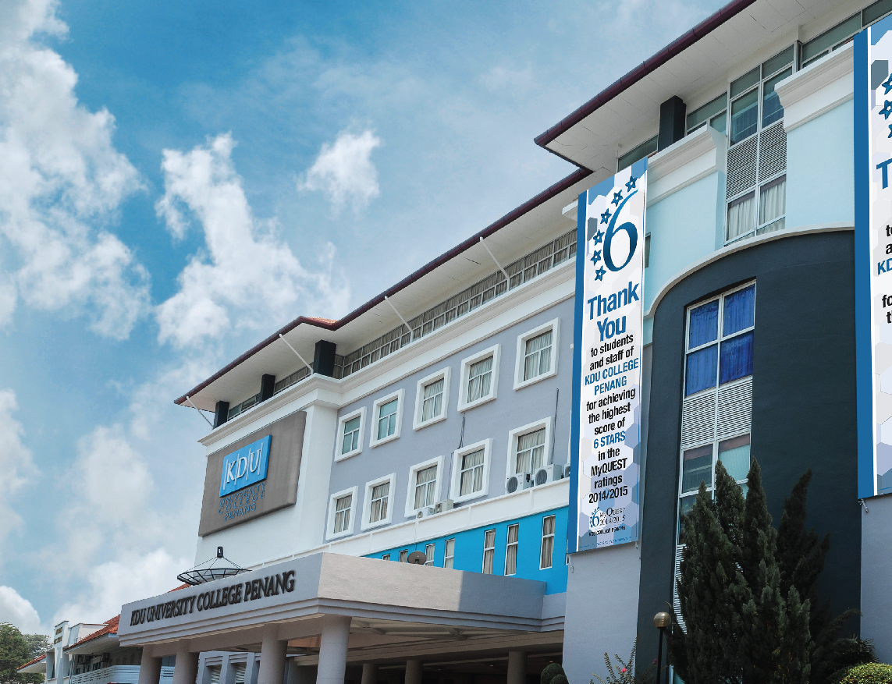
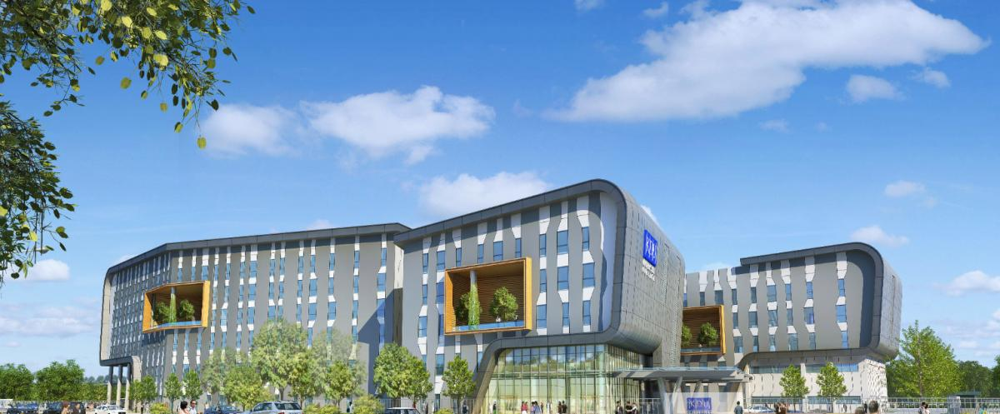
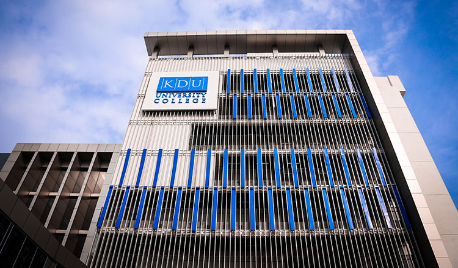

Our Campuses
KDU Penang University College
Spurred by the success of the Petaling Jaya campus, the KDU board decided to expend the college beyond the Damansara Jaya vicinity and plans were quickly made to make this dream a reality. From there, a decision was made to set up a branch campus in Penang with the aim to provide further education access to Penangites as well as the community in Northern Malaysia.
KDU Penang University College began its chapter when it opened its door to its first batch of students in 1991. Since then, the KDU Penang University College has grown by leaps and bounds. Now sitting proudly at Jalan Anson, KDU Penang University College is the most popular private tertiary education provider in the northern region. It has international alumni from 60 countries around the world.
KDU Penang University College’s range of internationally recognised industry-driven academic programmes covers a wide level of offerings from Certificate to Diploma and Degree level programmes. All its programmes are accredited by the Malaysian Qualifications Agency and are internationally affiliated with top universities around the globe such as University of Lincoln and Northumbria University from the United Kingdom and the International Management Institute Switzerland (IMI).
KDU Penang was conferred an all-round 6-star College status by Ministry of Higher Education (MOHE) MyQuest Audit 2014/2015. It boasts of state-of-the-art facilities which include industry-standard 5 star kitchens, a Recording Studio, Media Command Centre, Art Gallery and Design Studios, VLSI engineering labs, Games and Multimedia Computing Design Labs, Business Boardrooms and Lounge, Mock Hotel Suites, Mixology lab and many more.
In 2015, KDU Penang received the prestigious 6-star, college-based rating in the 2014/2015 Malaysian MyQUEST for the large category. KDU College was the only private college in Penang – and the Northern region – to be awarded this eminent recognition.
All this helps ensure that every KDU student is well prepared to be gainfully employed upon graduation – an indisputable fact that has strengthened the institution’s impressive graduate employment ratio record.
Over a span of 25 years, our students continue to do us proud with a string of successes in various national and international competitions. In July 2013, KDU Penang was also awarded the Penang MPSP Green Industry Award for the SME Education and Awareness category. For a real education in the real world – HIT THE GROUD RUNNING™ with KDU Penang University College.

METROPOLIS AT BATU KAWAN
In 2014, Paramount Corporation Berhad inked a deal with Penang Development Corporation (PDC) to purchase 30 acres of freehold land in Batu Kawan, Penang. Located 5 minutes to the Second Penang Bridge at Bandar Cassia, the newest and largest township on the mainland of Penang state, comprises 10 acres of institutional land and 20 acres of land for integrated development.
The signing will see PCB build Penang’s first university metropolis in the fast-growing district of Batu Kawan. The metropolis will be developed by Paramount Property, the property development arm of PCB, and will be anchored by a new purpose-built campus for KDU Penang, owned by PCB’s Paramount Education group.
Under the terms of the agreement, PCB acquired the land from PDC at RM65,557,800 with the institutional land transacted at RM40.50/sq ft, while the land for development transacted at RM55/sq ft, both with freehold titles.
The new KDU campus in Batu Kawan would feature facilities that are more in line with the requirements of a university college, with a comprehensive range of academic, sports and recreational facilities, creating a live-and-learn, work-and-play environment that stimulates and promotes learning.
By having a campus at Batu Kawan, which is also home to the planned Batu Kawan Industrial Park, KDU Penang University College would also be able to collaborate with employers to provide students with more opportunities to undertake internships and participate in professional activities. Similarly, the staff of KDU Penang will be able to collaborate with the manufacturing and commercial industries nearby to carry out joint research projects, which will bring tremendous benefits to the university college in the long run.
Programmes will be work-integrated and community-integrated to prepare job-ready graduates, and will also incorporate sustainability issues as a component of their curricula.
In terms of property development, this new university metropolis in Batu Kawan would become the new property magnet to meet the needs of Penang’s growing and maturing population, especially given its position as the 3rd satellite town in Penang, after Bayan Lepas and Seberang Jaya, and the state’s main industrial site on the mainland.

KDU UNIVERSITY COLLEGE, UTROPOLIS, GLENMARIE
Our real world education prepares you to hit the ground running
In January 2015, KDU University College moved to its new flagship campus at Utropolis Glenmarie, with its state-of-the-art facilities and a contemporary teaching and learning environment. KDU University College offers a wide range of programmes at Certificate, Diploma, Degree and Masters levels, and has introduced home-grown degree programmes that are at the forefront of growing industries, reflecting its promise of being a real-world university meeting real-world needs. These include hospitality, tourism and culinary arts, game development and computing, communications and creative arts, business, as well as engineering.KDU University College is a GBI (Green Building Index) certified-rated campus with 16.3% green footprint (local authority requirement is 10%). The tobacco smoke-free campus has naturally-ventilated courtyards and corridors, and is fitted with energy-efficient centralised chilled water air-conditioning system, Advanced Building Management System with scheduling capabilities, energy-efficient light fittings, demand-controlled ventilation, rain-water harvesting system, amongst many others.

KDU COLLEGE, DAMANSARA JAYA
Quality international programmes with great student experience
KDU College, situated at the Damansara Jaya campus, offers quality international programmes with great student experience through its partnership with top universities around the world. Its close collaboration with top-ranking foreign university and education partners also ensures students of globally-recognised pre-university and bachelor degree qualifications that are equivalent to those awarded by the partners’ home campuses. KDU students thus have the best of both worlds at their doorstep.